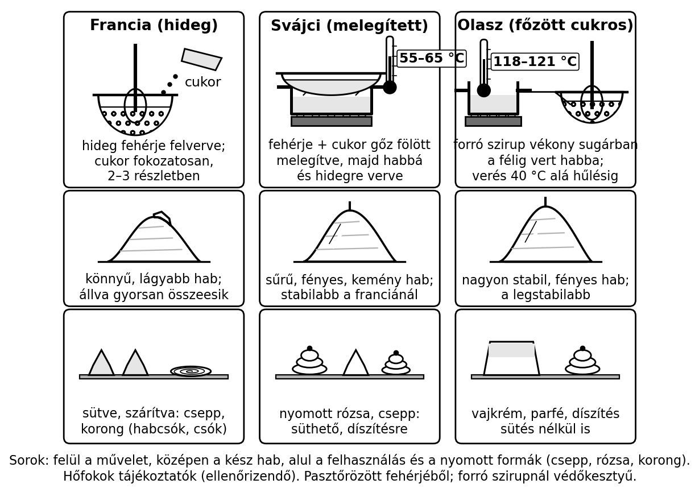

Képzeld el, hogy egy esküvői tortát kell díszítened habcsókból készült rózsákkal, másnap pedig krémes süteményt kell gyártanod. A reggeli termelés közben az a kérdés: vajon melyik habcsókfajtát válaszd? Ha rosszul döntesz, a rózsák összeesnek, a krém megfolyik, és az egész tétel megy a hulladékba. Ráadásul a vendégek között gyermekek, idősek és várandós anyukák is vannak, akiknél a nyers tojásban lévő baktériumok komoly kockázatot jelentenek. Ebben az alfejezetben megtanulod, hogyan készíts biztonságos, stabil tojáshabkrémet és habcsókot a cukrászüzemi gyakorlatnak megfelelően.
A habcsókokat gyakran a hőkezelés módja és a stabilitásuk szerint három csoportba soroljuk. Az alábbi táblázat összefoglalja a legfontosabb különbségeket, kiegészítve a tipikus felhasználási területekkel. A készítés során a tojásfehérje hővel és/vagy cukorral való kezelése határozza meg, hogy a hab mennyire tartja meg a formáját, és mennyire biztonságos élelmiszer-higiéniai szempontból.
Táblázat. A három alap habcsók összehasonlítása
| Jellemző | Francia (hideg) | Svájci (melegített) | Olasz (főzött cukros) |
|---|---|---|---|
| A habhoz adott hő | nincs (csak szobahőmérséklet) | vízgőz fölött 55–65 °C-ig | 118–121 °C-os cukorszirup |
| Stabilitás | a legkevésbé stabil | közepesen stabil | a legstabilabb |
| Tipikus felhasználás | habcsókok, könnyű habosítás | habcsókok, krémek, macaron | díszítés, vajkrém, parfé, krémes krém |
| Nyers tojás kockázata | a legnagyobb (csak pasztőrözött fehérjéből biztonságos) | csökkentett, de nem teljesen pasztőrözött | részben hőkezelt, de nem garantáltan pasztőrözött |
| Állaga kész állapotban | lágyabb, kevésbé tömör | selymes, jól formázható | nagyon kemény, fényes |
A táblázatból látható, hogy az üzemi választás mindig az adott termék biztonsági és technológiai követelményétől függ. A részletes indoklást a következő alfejezetekben bontjuk ki.
Definíció. Habcsók (meringue): tojásfehérjéből és cukorból, mechanikai habosítással készített, levegővel dúsított cukrászati alapkeverék. A hab akkor stabil, ha a fehérjemolekulák a cukorral együtt a levegőbuborékok köré szilárd, rugalmas hálót képeznek.
Definíció. Tojáshabkrém (krémes krém; nemzetközi rokona a crème chiboust – ellenőrizendő: szakszótár; a „mousse au beurre” vajkrémet jelent): jellemzően főzött sárgakrémből (vagy pasztőrözött tojássárgája alapú krémből) és tojásfehérjéből készült habból – leggyakrabban olasz vagy svájci habcsókból – álló, levegős, könnyű, de stabil krém. A klasszikus krémes töltelékében a két komponenst zselatin hozzáadásával dermesztik, hogy a krém ne folyjon ki a leveles tésztából.
Szabály. Nyers tojás használata. A cukrászüzemi gyakorlatban nyers tojást vagy nyers tojásból készült habot tartalmazó, hőkezelés nélküli terméket csak pasztőrözött tojástermékből vagy hőkezelt (főzött cukros, melegen vert) változattal szabad készíteni. A vendéglátó egységekben a nyers tojás szalmonella kockázata miatt kerülni kell a teljesen nyers tojásfehérje felhasználását olyan készítményekben, amelyeket hőkezelés nélkül fogyasztanak. (ellenőrizendő: a hatályos élelmiszer-biztonsági és közegészségügyi előírások, valamint a NÉBIH útmutatói szerint)
Higiénia. A tojásfehérjét a feltörés előtt mindig ellenőrizni kell: a tojás héja ép legyen, ne legyen repedt, szennyezett vagy idegen szagú. A tojásfeltöréshez külön eszközt használjunk, és azonnal kezet kell mosni. A pasztőrözött tojásfehérjét hűtve, a gyártó által megadott hőmérsékleten és lejárati időn belül tároljuk, és felhasználás előtt ellenőrizzük a csomagolás épségét.
Mindhárom habcsók alapja a tojásfehérje habbá verése. A fehérjét akkor tudjuk jól habosítani, ha az eszköz és az edény zsírmentes, a fehérje nem tartalmaz tojássárgája-maradékot, és a hőmérséklete 15–20 °C körüli. A cukrot fokozatosan, több részletben adjuk a félig felvert habhoz, mert így a cukor beépül a habhálóba anélkül, hogy összetörné a buborékokat.
A három fajta különbségét egy ábrán összevetve: felül a művelet (hideg verés, melegítés gőz fölött 55–65 °C-ra, forró szirup 118–121 °C-on), középen a kész hab állaga, alul a felhasználás és a nyomott formák.

A krémes sütemény töltelékéhez használt klasszikus krém alapja a főzött sárgakrém (lásd Tojáskrémek I: főzött sárgakrém és vaníliakrém) és a fent bemutatott habcsók, leggyakrabban olasz vagy svájci habcsók. A zselatin dermesztő adalékot azért adjuk hozzá, mert a krémnek meg kell tartania a formáját a krémes lapok között, és nem folyhat ki vágáskor.
Technológiai lépések (krémes krémje):
1. példa: Olasz habcsók nagyítása 24 cm-es tortához
Egy 24 cm-es torta díszítéséhez 300 g kész olasz habcsókot szeretnénk készíteni. A klasszikus arány: 100 g fehérjéhez 200 g cukor és 60 g víz (nyersanyag: 360 g). A 118–121 °C-ra főzött szirup kb. 88% cukrot tartalmaz, tehát 200 g cukor mellett csak kb. víz marad; a kész hab tömege ennek megfelelően (a szirupban kb. 33 g víz elpárolog). Számítsuk ki az anyagszükségletet a kész hab tömegére.
2. példa: Krémes krém anyaghányada 1 adaghoz
Egy krémes töltelékhez a következő arányt használjuk (kész félkészterméktömegekben): 100 g kész főzött sárgakrém, 50 g kész olasz habcsók, 3 g zselatin (kb. 2%; tanulási érték, ellenőrizendő: gyártói adatlap). Számítsuk ki, mennyi anyagra van szükség 40 db krémeshez, ha egy krémeshez 80 g töltelék kell.
A kész sárgakrém és a kész habcsók nyersanyag-szükségletét a technológiai lap adja meg (a sárgakrém 1150 g nyersanyagból kb. 1058 g, az olasz habcsók 360 g nyersanyagból kb. 327 g kész terméket ad).
Jogszabály. Az élelmiszer-biztonsági előírások szerint a nyers tojást tartalmazó, hőkezelés nélkül fogyasztott készítmények magas kockázatot jelentenek. Az Európai Unió élelmiszer-higiéniai rendelete (852/2004/EK) az élelmiszer-előállítók felelősségét és a HACCP-alapú eljárásokat írja elő; a mikrobiológiai kritériumokról szóló rendelet (2073/2005/EK) egyes élelmiszer-kategóriákra mikrobiológiai (pl. szalmonella) kritériumokat ad (ellenőrizendő: a cukrászati termékekre vonatkozó kategória). A hőkezelés nélküli habhoz ezért pasztőrözött tojástermék használata, vagy hőkezelt változat javasolt a könyv szerint. (ellenőrizendő: pontos jogszabályhelyek, hatályos hazai előírás és NÉBIH-útmutató)
Az allergének tekintetében a tojás a 14 jelölendő allergéncsoport egyike. A tojásfehérje és a tojássárgája is allergén, ezért minden ilyen készítményt „tojást tartalmaz” jelöléssel kell ellátni. (ellenőrizendő: 1169/2011/EU II. melléklet)
1. Termék neve, termékcsoport, alapmennyiség: Tojáshabkrém (krémes krémje) – kikészített sütemény tölteléke. Alapmennyiség: 1 adag 40 db krémeshez (kb. 3,2 kg kész töltelék; 3 493 g nyersanyagból).
2. Anyaghányad táblázat:
| Nyersanyag | Mennyiség (g) | Megjegyzés |
|---|---|---|
| Pasztőrözött tojássárgája | 237 | főzött sárgakrémhez |
| Kristálycukor sárgakrémhez | 316 | |
| Tej (3,5% zsírtartalmú) | 1582 | |
| Étkezési keményítő | 119 | sárgakrém sűrítéséhez (búzakeményítő: glutén) |
| Vaníliás cukor | 20 | ízesítő |
| Pasztőrözött tojásfehérje | 320 | olasz habcsókhoz |
| Kristálycukor sziruphoz | 640 | |
| Víz sziruphoz | 192 | nagy része elpárolog |
| Zselatinlap | 63 | hideg vízben duzzasztva, kinyomkodva (kb. 2%) |
| Összes nyersanyag | 3493 | nettó; a főzési és szirupveszteség után kb. 3 200 g kész krém (2 092 g sárgakrém + 1 046 g habcsók + 63 g zselatin) |
A táblázat tájékoztató jellegű; a tényleges receptúra a cukrászati szakmai gyakorlat és a gyártói adatlapok szerint változhat.
3. Eszközök és gépek: főzőüst vagy lábas, habverőgép (univerzális konyhagép habverő fejjel), digitális hőmérő, cukorhőmérő, tálak, fakanál vagy szilikon spatula, szűrő, mérleg.
4. Műveleti sorrend:
5. Kritikus pontok és technológiai kulcspontok: - CCP 1: Hőkezelés (sárgakrém és habcsók): a sárgakrémet felforraljuk, és 2–5 percig lassan forraljuk (tanulási határérték, ugyanaz, mint a Tojáskrémek I: főzött sárgakrém és vaníliakrém alfejezetben; ellenőrizendő: üzemi HACCP-terv). - CCP 2: Hűtési lánc: a kész krém hőmérsékletét 0–4 °C-on tartjuk, max. 24 óráig (ellenőrizendő: HACCP-terv). - Technológiai kulcspont: hab és sárgakrém egyesítésénél a habot ne törjük össze – óvatos keverés. - Technológiai kulcspont és munkavédelem: a habcsók szirupját 118–121 °C-ra főzzük (cukorhőmérő); a forró szirup égésveszélyes.- Technológiai kulcspont: a zselatint legfeljebb kb. 60 °C-os folyadékban oldjuk (tanulási ökölszabály, ellenőrizendő: gyártói adatlap); a túl forró és híg oldat a habot is összeroppantja.
6. Allergének: tojás (tojássárgája és tojásfehérje), tej, glutén (a sárgakrém lisztjéből). Figyelem: a krémes sütemény leveles tésztája is tartalmaz glutént és vajat, így a kész termék allergénjei: glutén, tojás, tej. Nem tartalmaz: dióféléket, földimogyorót, szóját, szezámot (kivéve, ha a recept eltér).
7. Minőségi jellemzők: a krém homogén, fényes, levegős, nem folyós és nem tömör. Íze édeskés, tojásos-tejes, vaníliás. A krémes szeletelésekor a krém nem folyik ki, a lapok közötti helyet kitölti, de nem nyomódik ki.
8. Tárolás, eltarthatóság: hűtve 0–4 °C, legfeljebb 24 óra. Tálalás előtt 15–20 perccel kivesszük a hűtőből. (ellenőrizendő: HACCP-terv szerinti eltarthatóság)
| Lépés | Veszély | Megelőzés | Kritikus határ (tanulási érték) | Monitorozás | Helyesbítő tevékenység | Dokumentum |
|---|---|---|---|---|---|---|
| Pasztőrözött tojástermék átvétele | mikrobiológiai (szalmonella) | minősített beszállító, hűtött szállítás | hőmérséklet ≤ 4 °C | átvételi hőmérséklet mérése | visszautasítás vagy áthelyezés | átvételi napló |
| Sárgakrém hőkezelése | mikrobiológiai | megfelelő hőmérséklet, folyamatos keverés | forrás (≥ 95 °C maghőmérséklet), forrástól 2–5 perc (tanulási érték, ellenőrizendő) | maghőmérő | tovább főzés, selejtezés | hőmérsékletnapló |
| Krém hűtése, tárolása | mikrobiológiai (szaporodás) | gyors hűtés, hűtött tárolás | 0–4 °C, max. 24 h | hűtő hőmérsékletének ellenőrzése | hűtő javítása, termék selejtezése | hűtőnapló |
A habcsók esetében ellenőrizzük: - Forma: a hab megfelelően formázott, nyomózsákból nyomva megtartja a mintát. - Felület: sima vagy enyhén érdes, a fényesség a cukor megfelelő oldódására utal. A fénytelen, szemcsés felület kristályos cukorra vagy alulverésre utal. - Állag: a hab kemény, de rugalmas; nem törik, és nem folyik. A sütött habcsók száraz, ropogós, de nem égett. - Íz és illat: tiszta, édes, tojásos jellegű, idegen íz és szag nélkül.
A tojáshabkrém esetében: - Állag: levegős, krémes, nem folyós és nem tömör. - Homogenitás: a sárgakrém és a hab egyenletesen elkeveredett, nincs csomósodás vagy rögös zselatin. - Szín és íz: a felhasznált anyagoknak megfelelő (pl. vaníliás sárgakrémtől halványsárga). - Stabilitás: a krém egy óra múlva is megtartja szerkezetét, nem ereszt vizet.
Egy cukrászda a hétvégi esküvői rendelésre 200 db krémes süteményt készít. A tapasztalt cukrász reggel pasztőrözött tojásfehérjéből olasz habcsókot ver, és főzött sárgakrémet készít. A fiatal tanuló azonban a zselatinlapokat sok forró vízben oldja fel, mert gyorsabbnak gondolja, és a forró, híg oldatot a habcsókba keveri. A krém szép levegősnek tűnik, de hűtés után folyékony marad, és a krémesek összeesnek. Az ok: a forró, nagy mennyiségű oldat a habot részben összeroppantotta és felhígította a krémet, a zselatin pedig a túl sok vízben nem tudott elég erős gélt adni. A hibát a tanuló megelőzhette volna, ha a zselatint kevés vízben, legfeljebb kb. 60 °C-on oldja, és hőmérővel ellenőrzi. A tétel egy részét sikerült megmenteni lapos süteményként (pl. pohárkrémként), de az esküvői rendeléshez új krémet kellett készíteni. A tanulság: a zselatin hőmérsékleti érzékenysége kritikus pont, és a fiatal dolgozók betanításakor hangsúlyozni kell a HACCP előírásait.
Válaszolj a kérdésekre röviden, majd lapozz a Megoldások részhez.
1. feladat (A) Sorold be a következő habcsókokat a hőkezelés módja szerint: francia, svájci, olasz. Melyik a legkevésbé stabil?
2. feladat (A) Számítsd ki, mennyi cukor és víz szükséges 250 g pasztőrözött tojásfehérjéből készülő olasz habcsókhoz a klasszikus arány (100 g fehérje : 200 g cukor : 60 g víz) alapján.
3. feladat (B) Egy tojáshabkrém receptje: 1000 g főzött sárgakrém, 500 g olasz habcsók, 30 g zselatin. Hány gramm krém lesz összesen? Ha 60 db krémeshez 80 g töltelék kell egyenként, elegendő-e ez a mennyiség? Ha nem, mennyivel kell növelni az alaparányt?
4. feladat (B) A svájci habcsókot 60 °C-ra melegítjük vízgőz fölött, majd habbá verjük. Egy 50 g-os tojásfehérje-cukor keverékből kiindulva a habverés során a térfogat kb. 3,8-szorosára nő, a tömeg nem változik. Számítsd ki a hab sűrűségét, ha a keverék kiinduló sűrűsége 1,05 g/ml, és a hab térfogata 180 ml.
5. feladat (C) Egy krémes krémnél a dolgozó a zselatint forrásban lévő vízben oldja fel, majd a sárgakrémhez keveri. Mi lesz a várható hiba, és hogyan előzhető meg? Indokold a választ a zselatin technológiai tulajdonságai alapján.
6. feladat (D) Készíts el otthon vagy tanműhelyben egy adag francia habcsókot (csókot) a „Francia (hideg) habcsók” lépései szerint (100 g fehérjéhez 100–150 g cukor), pasztőrözött tojásfehérjéből; sütés: tanulási paraméter kb. 90–100 °C, 1–2 óra (ellenőrizendő: recept és sütő). Töltsd ki az alábbi technológiai naplót: hőmérséklet, idő, a hab állaga sütés előtt és után, a kész habcsók minőségi jellemzői.
1. feladat (A) - Francia: hideg, nincs hőkezelés; a legkevésbé stabil. - Svájci: 55–65 °C-ra melegített vízgőz fölött; közepesen stabil. - Olasz: 118–121 °C-os cukorsziruppal forrázott; a legstabilabb.
2. feladat (A) Adott: fehérje = 250 g, arány 100 g fehérje : 200 g cukor : 60 g víz. Szorzószám: . Cukor: . Víz: . Ellenőrzés: a nyersanyagok összes tömege = 250 + 500 + 150 = 900 g; a kész hab tömege a szirup vízvesztesége miatt kb. .
3. feladat (B) Összes krém: 1000 + 500 + 30 = 1530 g. Szükséges töltelék: 60 db × 80 g = 4800 g. A jelenlegi mennyiség nem elegendő. Szorzószám: . Növelendő: 1530 × 3,137 ≈ 4800 g; tehát az alaparányt 3,14-szeresére kell növelni. Anyagszükséglet: sárgakrém: 1000 × 3,137 ≈ 3137 g; habcsók: 500 × 3,137 ≈ 1569 g; zselatin: 30 × 3,137 ≈ 94 g.
4. feladat (B) Kiinduló keverék tömege: 50 g. Kiinduló térfogat: . Hab térfogata: 180 ml. Hab sűrűsége: (a térfogat -szorosára nőtt). A hab tehát sokkal kisebb sűrűségű, mint a folyadék, mert levegőt tartalmaz.
5. feladat (C) A rövid ideig forró vízben oldott zselatin gélereje még csak kis mértékben csökken; a hosszas forralás és a savas közeg viszont jelentősen rontja. A forrásban lévő, nagy mennyiségű vizes oldat a sárgakrémet felhígítja, a habot összeroppantja, és a krém ezért hűtés után sem dermed meg rendesen. Megelőzés: a zselatint hideg vízben duzzasztjuk, kinyomkodjuk, és legfeljebb kb. 60 °C-os folyadékban oldjuk (tanulási ökölszabály, ellenőrizendő: gyártói adatlap), kevés vízzel, majd folyamatosan keverjük, amíg feloldódik. A kész krémet gyorsan lehűteni.
6. feladat (D) A gyakorlati feladat értékelési szempontjai: a hab állaga kemény, fényes, a cukor teljesen feloldódott; a formázás megfelelő; a sütési hőmérséklet és idő betartása; a a kész habcsók száraz, ropogós, egyenletes színű, nem égett. A naplóban rögzíteni kell a fehérje hőmérsékletét (15–20 °C), a habverés idejét, a sütés hőmérsékletét (pl. 90–100 °C, 1–2 óra) és a késztermék tömegét (a vízveszteség miatt kisebb). (ellenőrizendő: pontos sütési hőmérséklet recept szerint)
A habcsókok három alaptípusa a francia (hideg), a svájci (55–65 °C-ra melegített) és az olasz (118–121 °C-os cukorsziruppal forrázott) habcsók. A stabilitás ebben a sorrendben nő. A tojáshabkrém a krémes sütemények klasszikus tölteléke, amelyet főzött sárgakrémből és olasz vagy svájci habcsókból, zselatinnal dermesztve készítünk. A nyers tojásból készült, hőkezelés nélküli habok mikrobiológiai kockázatot jelentenek, ezért hőkezelés nélküli habhoz pasztőrözött tojásfehérjét használunk (ellenőrizendő: hatályos hazai előírás és NÉBIH-útmutató). A zselatint legfeljebb kb. 60 °C-os folyadékban oldjuk (tanulási ökölszabály), mert a hosszas forralás és a túl forró, híg oldat rontja a gélt és a habot. A kész krémet 0–4 °C-on kell tárolni, legfeljebb 24 óráig. Továbbvitt eredmény. Az itt tanult habcsókokat és tojáshabkrémet használjuk a Vajkrémek: főzött, tojássárgás, habcsókos vajkrém alfejezetben az olasz habcsókos vajkrém alapjaként, valamint a Krémesek: vajas/leveles és forrázott tésztából alfejezetben a klasszikus krémes töltelékéhez.